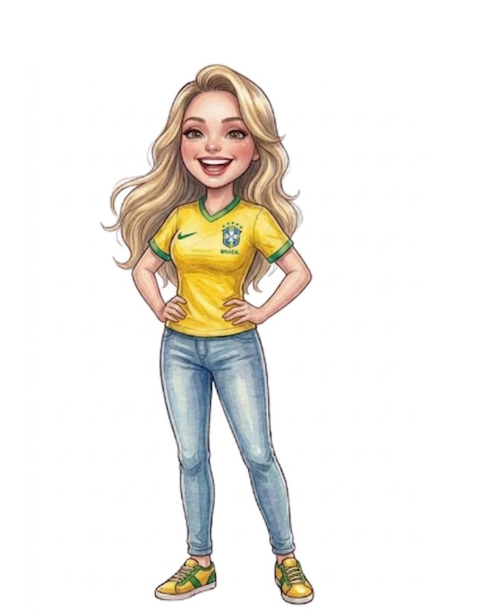
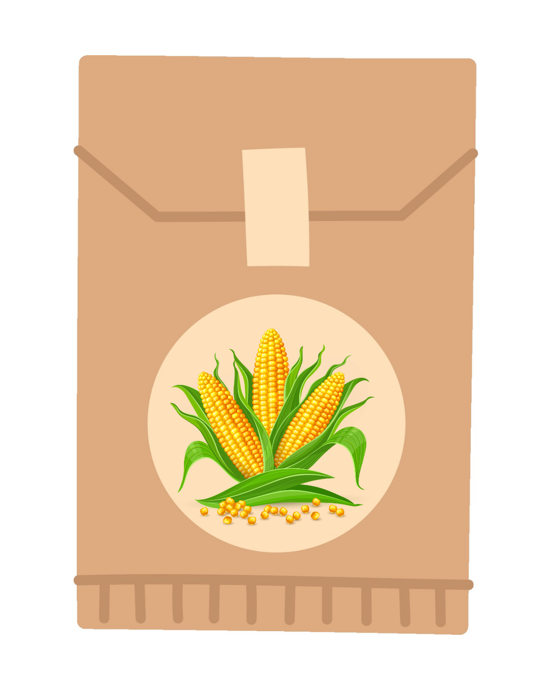
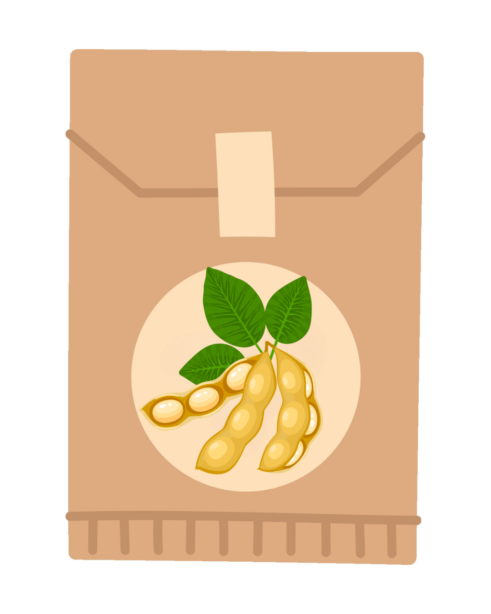
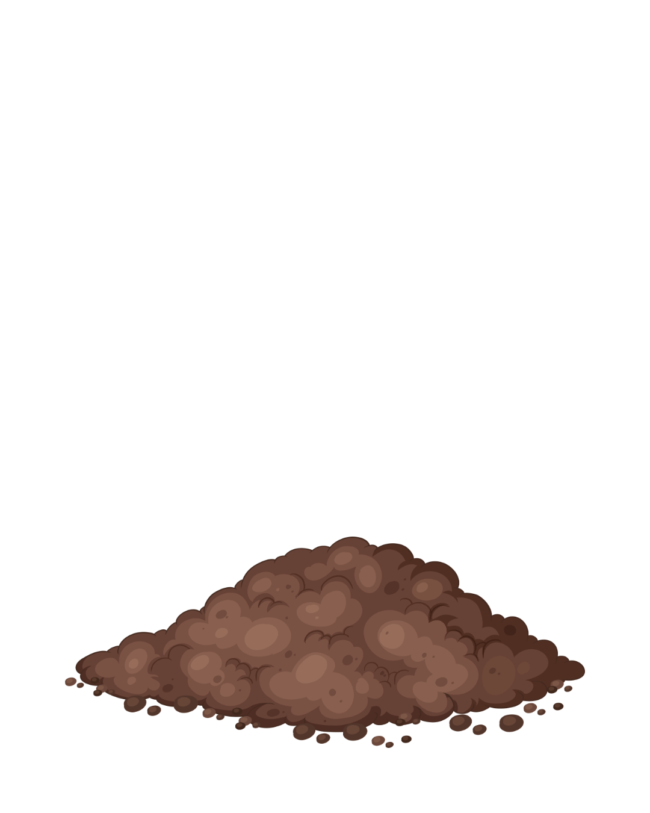

🌱 Agro Forte, Futuro Sustentável
🌾 1. Apresentação
🐝 2. Jogo da Abelha
♻️ 3. Compostagem
🌽 4. Plantio
🏆 5. Certificado

🌻 Carregando...
✏️ Salvar Nome
◀
▶
Fala 1 / 14
🌸 Flores coletadas:
0
/ 10
❤️ Vidas:
3
🎮 Use ↑ ↓ para mover a abelha
🔄 Reiniciar Jogo
🧺 Composteira
Acertos: 0 / 4
🍌 Arraste os orgânicos para a composteira! 🥚🍉🍎
🌱 Escolha sua semente:

Milho
Tomate

Soja

👉